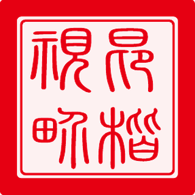
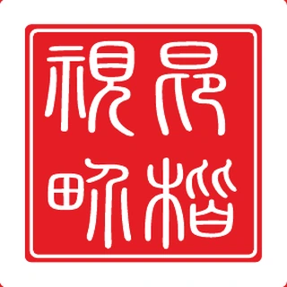

01 — 项目背景
名义上是内刊，实际上只是文字堆砌
《昂楷视界》是昂楷科技每年一期的企业内刊。它的核心任务是记录公司、连接员工，同时也会随着销售拜访、渠道合作等场景进入外部视野。前两期更接近内部资料汇编，缺少一本内刊应有的结构。第三期又恰逢公司十五周年，因此我希望把它重新建立成一套真正可持续的内刊体系。
前两期的问题
我要解决的挑战
- 材质普通
- 风格传统
- 通篇文字堆砌
- 缺乏排版层次与视觉节奏
- 识别一枚可沿用的标志，成为封面、目录、页码的锚点
- 阅读三级优先级加章节过渡，让长文、人物、技术各有节奏
- 材质80 克铜版纸，反复打样，直到手感对得上内容
- 可继承七维规范先于设计，让第四期不必再从零开始
02 — 面向对象
以内为主，同时承担品牌外延传播
同一本刊物，要对四类人说话
01
公司内部
员工要的是归属感——刊物必须让人在里面看见自己、看见同事的名字。
02
销售拜访
走进政府、公检法、医院、金融客户时，它是被递出去的第一件器物。
03
渠道伙伴
合作方靠它理解昂楷是谁。专业度要一眼成立，不能靠解释。
04
投资人
它要在有限页数里，同时讲清轨迹、文化，和这家公司为什么值得被相信。
03 — 从图书馆开始的调研
面对陌生领域，先把问题拆成能研究的模块
我此前没做过内刊。但「没做过」不等于只能凭感觉——我把这件陌生的事拆成七个可以逐项研究的模块，然后专门去深圳宝安图书馆，对馆内优秀的内刊与期刊逐本拍照、逐项比对。
01版心与网格
02标题层级
03字体组合
04封面封底信息分配
05目录信息密度
06正文图文比例
07章节过渡
回来后逐项拆解、归纳共性，筛出其中优秀且符合昂楷企业文化的部分，落成一套可执行的规范。整个过程是 Research → Analysis → Pattern → System：先看清别人怎么做，再归纳出规律，最后变成自己能反复用的规则。
04 — 视觉体系
先立规则，再谈封面、标识和目录
规范定完，后面每一个具体设计都是它的延伸。往下滚，五个环节依次推过。
- 01视觉规范
- 02主视觉标识
- 03封面与封底
- 04印章式页码
- 05目录设计
一套从零建立的内刊设计规范
动手排版之前，我先写完了这份规范：七个维度，每一项都落到具体的字体、字号、毫米数和色值。它保证这本刊物换了主题、换了内容、甚至换了人做，还认得出是同一本。
- 标识印章 + 中英文标准字，比例与颜色不可改
- 字体标题思源黑 Heavy，正文思源宋 9–11pt
- 标题一级 24–30pt / 二级 16–20pt / 副 12–14pt
- 页眉上边距 12mm，下划线随文字延伸
- 目录配图高 40–60mm，页码 9–10pt
- 色彩主色 #E60012，辅色 #222222
- 页码奇左偶右，距边各 12mm，1pt 方框
一个独立于公司 Logo 的刊物标识
《昂楷视界》每年一期、要连着出很多年，它需要独立于公司 Logo、又能被长期沿用的识别符号——公司 Logo 代表企业，刊物标识代表这本书本身。
小篆字形 → 方印比例 → 字形结构 → 边框粗细 → 留白节奏 → 正负形 → 中英文组合 → 页码水印


阳刻 · 正形
阳刻更清雅，压在浅色正文与页码上；阴刻更有分量，压在红色主色块与封面上。两版都进了规范，按底色选用。
封面，是整期内刊的风向标
- 选图封面图代表公司当年最有分量的事件。十五周年这期，我放的是领导专访。
- 后期抠图、修背景、重排留白，让人物从背景里干净立出来，与红色印章形成呼吸。
- 定调「抛弃幻想 · 战胜恐惧 · 创造希望」同时是封面主标题、当期最重的文章和目录首条。
- 封底信息克制、大面积留白，与封面一放一收。
连页码也是视觉语言的一部分
我把「昂楷视界」的主标识做成了印章式页码——每一页的页码底下压一枚淡淡的印章，数字压在印章之上。翻到任何一页，都还在这本刊物的语境里。
点上一页 / 下一页看它怎么走：奇数页的页码落在左下、偶数页落在右下，距侧边与下边各 12mm。页眉会跟着换成对应章节的名字与拼音。
这是规范里最不起眼的一条，但整本 84 页都靠它维持秩序——读者不会注意到页码在哪，只会觉得这本书翻起来很顺。
做目录之前，先做一次信息架构
二十多篇文章，读者该先读哪一篇？我把目录分成三个优先级，用版面面积、配图和留白表达这个判断。鼠标移到任意一级，左边真实跨页上会亮出它的位置。
05 — 内容架构
五大章节，一套完整的叙事结构
我为每一个板块的名字都做了提炼与专门的视觉设计——「刊首语」「鸿程 · 笃行」「实战 · 撷英」——中文四字加拼音，配上红色下划线做页眉，再为每个章节设计一张全出血的过渡页。整本刊物因此有了从外部寄语、到战略、到一线、到员工心声的完整叙事线。
面对不确定性，我们如何面对 · 09
抛弃幻想 战胜恐惧 创造希望 · 11
昂楷拾光绘卷 · 16
平凡人做不平凡事——成功基因密码 · 19
昂楷科技在行动：数据安全的领航者 · 27
21 世纪经济报专访董事长：数据出海正当时 · 33
从新手到专业，七个月的成长之旅 · 46
浅谈如何获得客户信任 · 48
挑战中的成长之旅 · 55
数据安全行业的坚守与成长 · 57
昂楷视界
十五周年特刊
在昂楷遇见更好的自己 · 36
从挑战到卓越：协议解析能力的重构与创新之路 · 38
销售从来不是一个人的战斗 · 40
缘，妙不可言也 · 44
高质量解决方案修炼之道 · 52
昂楷十五岁啦！听我「叽叽喳喳」心里话 · 58
昂楷光影鉴史：四渡赤水观后感集萃 · 71
昂楷 · 共鉴风华册：同路者的荣耀合影 · 76
感谢相伴，启幕昂楷战略新篇章 · 81
- 5
- 大章节
中文四字 + 拼音，各配一张过渡页
- 21
- 篇文章
从合作伙伴寄语到员工心声
- 84
- 页版面
42 个跨页逐页排定
06 — 落地与延展
规范立住之后，它能走多远
从最难排的一个跨页，到第二本刊物沿用同一套规则，再到主动放下这套规则换一种语言。左边的图会跟着右边的文字换。
01
把十六年，做成一条能读完的线
这是整本刊物里我最花心思的一个跨页：2009 到 2024 年的关键节点按年份分成上下两排交错排布，中间用一条 S 形缎带把历年的资质证书、奖牌、认证串起来穿过整个版面。
难点不在好看，在于信息量太大又不能删。用一条连续的曲线做视觉动线，读者的眼睛才有地方落脚，不至于在一堆年份里迷路。
这一页也是我认为设计师和排版员的分界线：排版是把内容放进版面，信息设计是先决定内容该长成什么形状。
02
规范立住了，第二期就快了
第三期 2025 年元旦发行，第四期与《昂楷之道》同在 2026 年出版。
- 换了主题「数安中国 · 环球智慧」，封面从董事长专访换成国际代表团到访
- 换了章节名整套重新提炼：领航 · 新声 / 途迹 · 智进 / 内拓 · 外征
- 没换页眉、目录三级优先级、编委会名单块、印章式页码、字体与色彩规范
这一期验证的是规范本身：换了主题、换了章节名、换了封面语气，这本刊物依然认得出是同一本。
03
按内容、对象和场景，选择视觉语言
两本刊物承担的是两种传播任务。《昂楷视界》要记录组织、也要经得起被带到客户面前，语气必须稳重克制；《昂楷之道》讲的是昂楷人自己的故事，读者是每天在工位上的同事，可以更亲切。
- 视界印章体系 · 衬线字体 · 红黑主色 · 纪实人物 · 稳重克制
- 之道原创插画 · 大胆撞色 · 拼图元素 · 更多留白 · 亲切活泼
所以这一节想说的是：视觉风格是结果，策略判断才是能力。先想清楚这本书为谁、在什么场景下被翻开，风格是那个判断的产物。
04
整页只用一张插画和两行字
《昂楷之道》的章节过渡页整页只放一张原创插画和两行字——手写的动作、纸张肌理、克制的低饱和配色。放在《昂楷视界》里会显得轻，但放在这本文化读本里刚刚好。
同一个人，做出两本气质完全相反、却都成立的刊物。能守住一套规范，也能在另一本刊物上把它整个放下——这两件事同样重要。
07 — 从校对到印刷
设计师，也要自己把好编辑这道关
一本内刊里有几十篇文章、上百个人名和职务。排版做完只是一半，剩下一半没人替设计师做。
第一关 · 人工
多轮校对，多角色复核
参照出版行业的思路安排流程。企业内刊不必也不宜照搬出版社的三校三审，但设计师自己要把好这道关，对每一处文字、每一张图、每一个署名负责。
第二关 · 机器
AI 全文跑一遍，机器不会累
全书完成后用 AI 对全文跑一遍错别字、标点与事实核查。它是人工校对之外的一道机器检查关卡——机器不会累，但它也不懂上下文。报告分四类，逐条给出编号、页码位置、原文与建议修改。
最能说明问题的是这一条：内页 36—57 的栏目页眉拼音连续 22 页错成 XIEYIN，正确的 XIEYING 只出现在目录里。这种错误人眼校三遍也容易滑过去——因为它每一页都长得一样。
第三关 · 纸张
为了一张满意的纸，打了无数次样
打样阶段我坚持要用 80 克铜版纸——它的手感和厚度，是一本内刊「分量」的一部分。为此做了多轮供应商沟通、询价、打样与实物对比，最终找到能够提供相应纸张、并满足预期印刷效果的供应商。这一步考验的是能不能把设计从屏幕推进到生产现场。
N轮
供应商沟通 · 询价 · 打样 · 实物对比
第四关 · 评审
双线并行，把漫长的评审流程跑通
公司评审流程很长，需要多部门同时评审。为了不让项目卡在流程里，我把它拆成两条线同时推进，任何一条都不空等。
线上 · 电子流评审
线下 · 样本呈送
- 做法走公司线上电子评审流程，多部门在线查看、逐一确认
- 目的形成可追溯的评审记录，责任与意见都留痕
- 做法同时把打样出来的实体样本直接呈送公司最高领导
- 目的纸质的质感是屏幕无法替代的说服力，决策会快得多
两条线并行，等领导返回意见、修改完成，线上电子流也同步走完，就能直接进印刷与发布，大幅压缩了整体周期。
08 — 学习与总结
规范、纸张，和两种审美
-
01
没做过，不是拒绝的理由
接手内刊时我毫无经验，但我知道好的内刊长什么样。于是去图书馆把优秀期刊一本本拆开研究、把结论整理成规范、再从零搭起来。我看重的能力，是把一件没做过的事做成、并且做好。
-
02
设计的质感，要延伸到指尖
为了 80 克铜版纸找遍供应商、反复打样，看似执拗，但一本内刊的分量恰恰藏在纸张的手感里。设计不止于屏幕，也在材质、工艺和每一个物理细节里。屏幕上看起来一样的两个方案，拿在手里完全是两件东西。
-
03
视觉风格是结果，策略判断才是能力
《视界》的稳重与《之道》的活泼，不是两种审美偏好，是两次不同的策略判断——先想清楚这本书为谁、在什么场景下被翻开，风格是那个判断的产物。能守住一套规范，也能在另一本刊物上把它整个放下，这两件事同样重要。
我最终交付的，不只是某一年「做得更好看」的一本内刊。更重要的是：从第三期开始，昂楷有了一套下一年仍然能够继续使用、继续迭代的刊物设计方法。